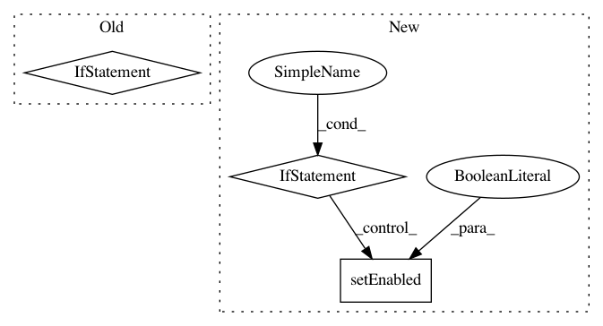

6f5fc2434882ee41eb7c9d01abc23830a1718099,ilastik/applets/tracking/base/trackingBaseGui.py,TrackingBaseGui,handleEditorRightClick,#TrackingBaseGui#Any#Any#,475
Before Change
]
if parents:
titles.append("Parents: " + ", ".join(map(str, parents)))
if children:
titles.append("Children: " + ", ".join(map(str, children)))
menu = TitledMenu(titles)
if any(IPCFacade().sending):
After Change
("Children", Protocol.simple_in, children)
]
for name, protocol, args in submenus:
if args:
sub = menu.addMenu("Hilite {}".format(name))
for mode in Protocol.ValidHiliteModes[:-1]:
mode = mode.capitalize()
where = protocol("track_id*", args)
cmd = Protocol.cmd(mode, where)
sub.addAction(mode, IPCFacade().broadcast(cmd))
else:
sub = menu.addAction("Hilite {}".format(name))
sub.setEnabled(False)
menu.addAction("Clear Hilite", IPCFacade().broadcast(Protocol.cmd("clear")))
else:
menu.addAction("Open IPC Server Window", IPCFacade().show_info)
menu.addAction("Start IPC Server", IPCFacade().start)
In pattern: SUPERPATTERN
Frequency: 3
Non-data size: 3
Instances
Project Name: ilastik/ilastik
Commit Name: 6f5fc2434882ee41eb7c9d01abc23830a1718099
Time: 2015-02-13
Author: buwen@stud.uni-heidelberg.de
File Name: ilastik/applets/tracking/base/trackingBaseGui.py
Class Name: TrackingBaseGui
Method Name: handleEditorRightClick
Project Name: ilastik/ilastik
Commit Name: 253f3d1cb2adfc35c47417971b134d732a04dc36
Time: 2013-01-04
Author: bergs@janelia.hhmi.org
File Name: applets/pixelClassification/autocontextClassificationGui.py
Class Name: AutocontextClassificationGui
Method Name: toggleInteractive
Project Name: biolab/orange3
Commit Name: 7ebf1257d3667e1245048ff5c6cbb7f9a86c4d9a
Time: 2015-09-14
Author: ales.erjavec@fri.uni-lj.si
File Name: Orange/widgets/data/owfile.py
Class Name: OWFile
Method Name: set_file_list